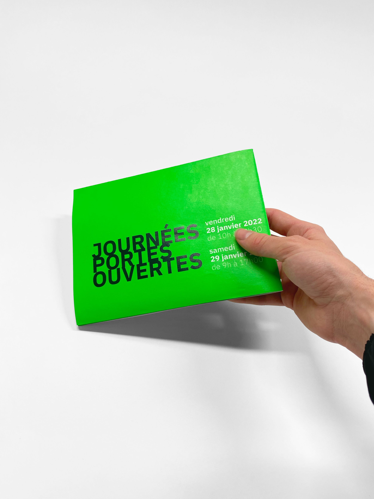
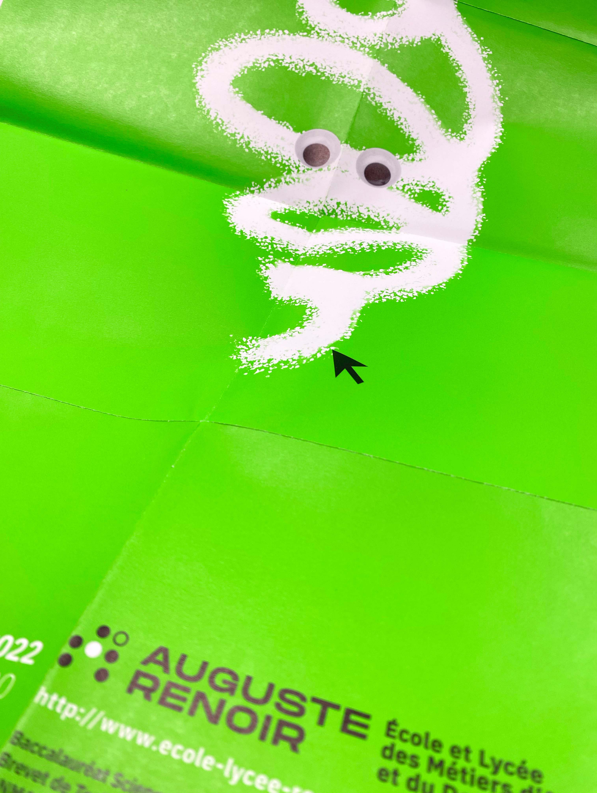
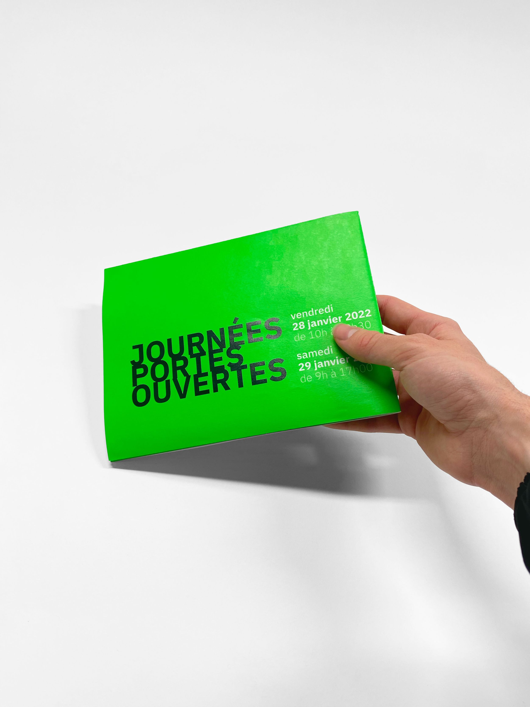
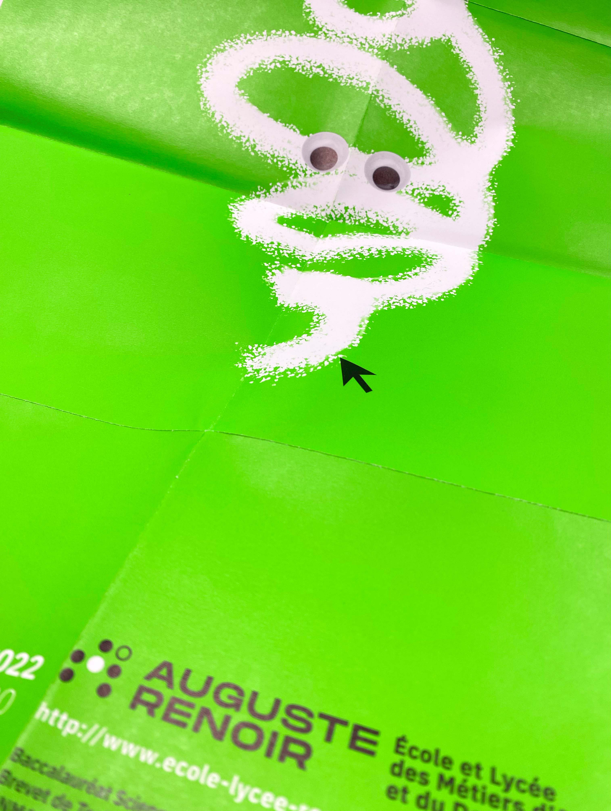

JPO.
Affiche - ELMAD Renoir
Création d'une affiche pour les journées portes ouvertes de l'École et Lycée des Métiers d'Arts et du Design Auguste Renoir à Paris.
Conception
Retranscrire graphiquement les valeurs
des formations proposées tout en respectant
la charte graphique et en assurant un impact visuel fort.
 


